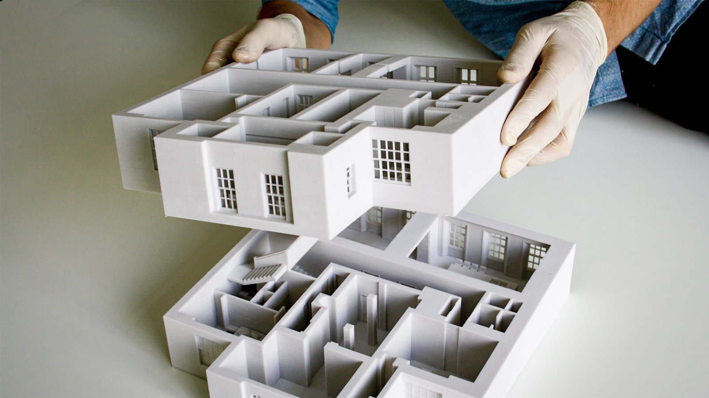

3D printing is an additive manufacturing process in which 3 dimensional objects are created from
a digital file.
From consumer grade 3D printers, to industrial 3D printers, their uses are limitless. Below you
will find some examples:
Consumer Products. From vases to toys, your imagination is the limit!Industrial Printers are quite a bit larger than consumer grade printers.Automotive Prototypes can be fabricated before the parts are cast in metal.Medical Products are helping to save the lives of those in need!

Architectural Models can showcase how final builds will come together with minute
details.Reconstructed Fossils are on display in museums around the world.